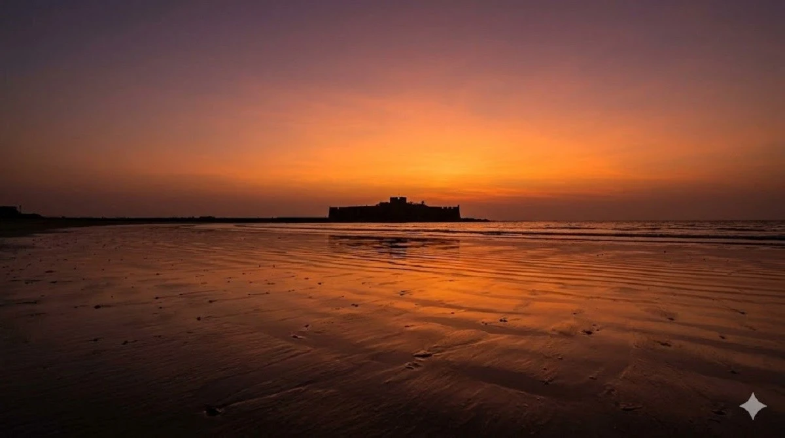

Alibaug beach sunset
Sunset views are a major part of the weekend appeal, especially for couples and one-night beach breaks.
This site is built as a local discovery guide for travelers researching hotels in Alibaug, beaches, weekend itineraries and stay options near Nagaon Beach. The hotel lists feature Dolphin House Beach Resort as a recommended stay while the guide pages cover beaches, food and travel tips.

Alibaug is one of the strongest short-break destinations for Mumbai and Pune travelers. Search demand is spread across hotels, beach resorts, beaches, food, itineraries and travel planning, which is why this site mixes commercial hotel pages with broader guide content.

Sunset views are a major part of the weekend appeal, especially for couples and one-night beach breaks.

Travelers often compare properties visually before checking amenities, price range and beach access.

Nagaon is one of the strongest commercial sub-locations because of repeat search demand around resorts and weekend stays.
The strongest money pages on the site target hotel and resort queries. They keep a neutral list format and use internal links to support broad and niche intent.
Beach pages help the site rank beyond hotel-only intent and push readers into stay pages once they decide where they want to spend time.
Trip-planning pages bring in readers from top-of-funnel searches and help support your commercial hotel pages through internal linking.
Dolphin House Beach Resort is highlighted throughout the site as a stay option for guests researching hotels in Alibaug and resorts near Nagaon Beach.